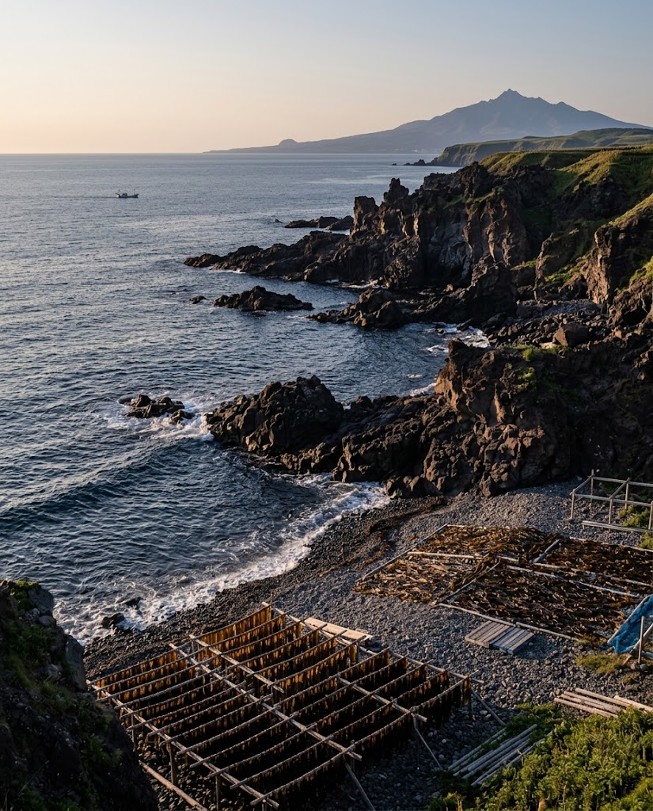
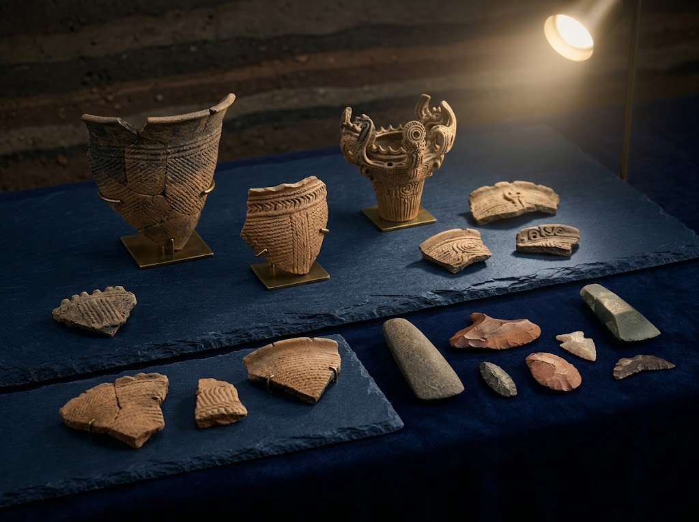

島の自然と人の営みを、
ひと巡りで。
利尻の昆虫や生物、気候、歴史までを学べる展示が揃います。館内は約20分で見て回れるコンパクトな規模ながら、じっくり読み込むと1時間ほど過ごす方もいます。
ふらりと立ち寄るのにちょうどよく、島を旅する時間に学びの深みを添えてくれます。
1977年（昭和52年）
発掘調査の資料を守るために、
この館は生まれました。
宗谷バス営業所の工事に関連した緊急発掘調査で出土した資料を保管するために設立されました。以来、利尻町の歴史と暮らしを今に伝えています。

トドとアザラシの
はく製に会える。
海の生きものを間近に見られるはく製展示は、この館のいちばんの見どころです。撮影は可能ですが、館内にルールがありますので、掲示をご確認のうえお楽しみください。
ご来館者の声
★★★★大人一人200円。駐車場は広く、20分ほどで全部見られるこぢんまりした博物館なので、少し寄るには十分楽しめます。島にいる蛇について、船などで紛れ込んだものだと館で知ることができました。
★★★★★料金は200円で、高校生以下は無料。撮影はできますがルールがあります。ふらりと寄って、利尻の昆虫や生物、気候、歴史を学べ、気づけば1時間ほど見入っていました。
館のご案内
- 入館料
- 大人 200円／高校生以下 無料
- 休館日
- 月曜日、国民の祝日の翌日、年末年始（最後の休館日から御用始めまで）
- 住所
- 北海道利尻郡利尻町仙法志本町136
- 電話
- 0163-85-1411
- 公式ページ
- 利尻町立博物館のページを開く
- メール
- rishiritownmuseum@town.rishiri.hokkaido.jp
- 駐車場
- 広い駐車場あり